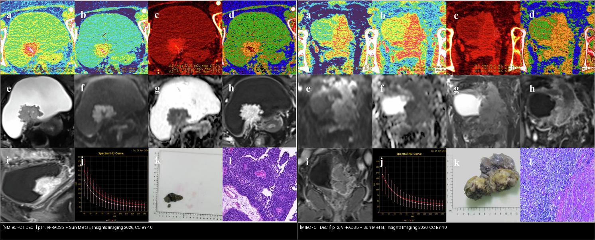
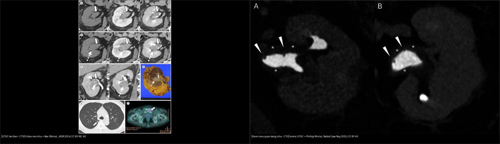
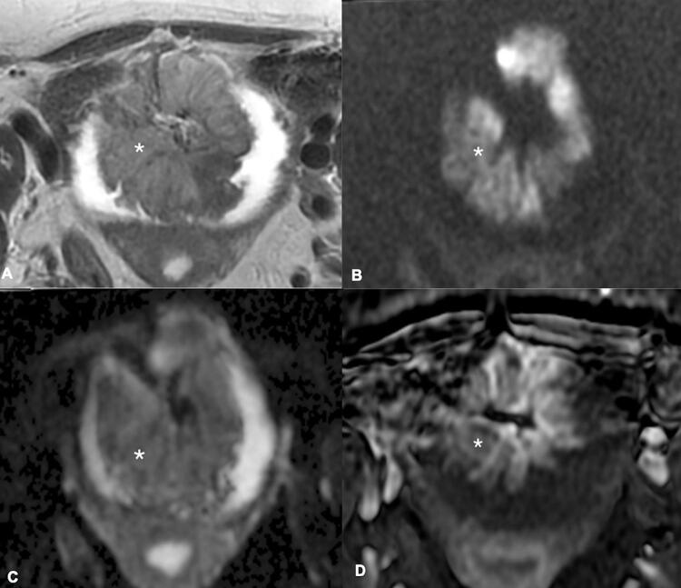
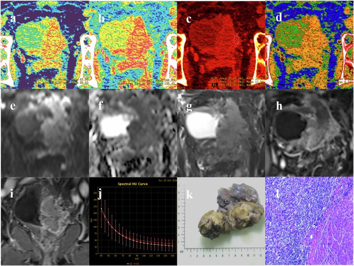
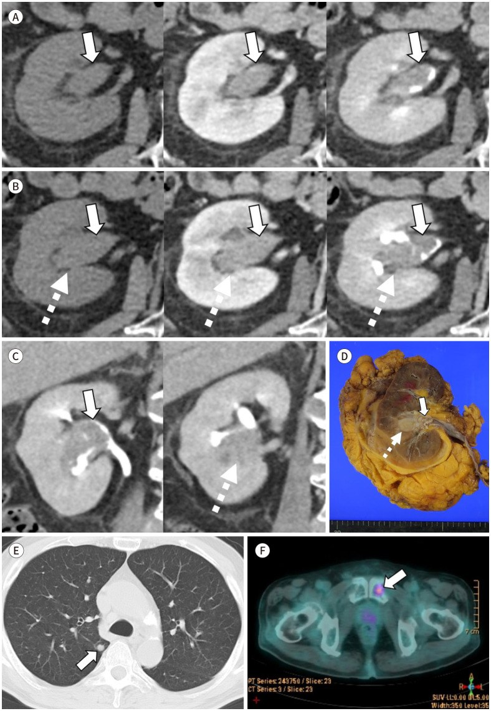
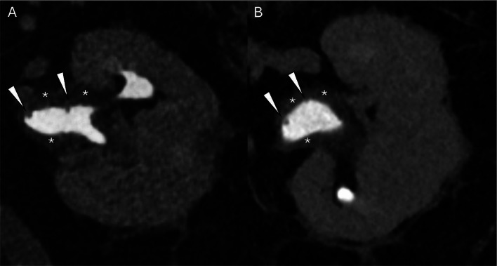

159 — Bàng quang & đường niệu trên: VI-RADS, xâm lấn cơ & UTUC / Bladder VI-RADS & UTUC
Tags: pattern:u-bang-quang pattern:khuyet-thuoc-duong-nieu vung:bang-quang vung:duong-nieu-tren score:VI-RADS protocol:mpMRI-bang-quang protocol:CTU
Mức chắc chắn (certainty): tổng hợp y văn (literature synthesis) — nhóm tự biên từ y văn mở (Insights Imaging 2026 CC BY 4.0, Int Braz J Urol 2022 CC BY 4.0, J Korean Soc Radiol 2024 CC BY-NC 4.0, Radiol Case Rep 2025 CC BY 4.0), chưa gắn ca nguyên văn đơn lẻ.
1. Tổng quan — ranh giới sống còn là cơ (muscularis propria), không phải kích thước
- U niệu mạc (urothelial carcinoma) chiếm ~90% u bàng quang. Mấu chốt điều trị: T1 (xâm lấn lớp dưới niêm mạc — lamina propria) vs T2 (xâm lấn cơ — muscularis propria) — T1 cắt nội soi (TURBT) + BCG; T2 phải cắt bàng quang tận gốc (radical cystectomy). TẠI SAO hình ảnh không thể chỉ đọc "khối": cùng khối to nhưng khác ranh giới cơ = khác phẫu thuật.
- TẠI SAO MRI (không phải CT) cho cơ: T2W high-resolution thấy dải cơ giảm tín hiệu (hypointense detrusor); u = tín hiệu trung gian-cao + DWI tăng mạnh/ADC thấp (tế bào đặc, kênh ngoại bào hẹp) + DCE ngấm sớm (tân mạch). Xâm lấn cơ = u phá dải cơ giảm tín hiệu (T2W) + tín hiệu DWI/ngấm kéo vào lớp cơ.
- TẠI SAO DWI/DCE trội hơn T2W (VI-RADS): tương phản cơ-tế bào (diffusion) + mạch máu (perfusion) mạnh và khách quan hơn tương phản mô mềm của T2W — nên VI-RADS lấy DWI/DCE làm chuỗi quyết định (dominant) khi lệch với T2.
- UTUC (u niệu mạc đường niệu trên): ~5–10% u niệu mạc; ~60% đã xâm lấn (≥ pT2) lúc chẩn đoán — nặng hơn bàng quang; hình trên CT urography là khuyết thuốc (filling defect) + dấu chấm (stipple sign — thuốc đọng trong khe u) + tắc → ứ nước.
- Phân tầng UTUC (EAU): nguy cơ cao khi có ≥ 1 trong: ứ nước, u > 2 cm, tế bào học độ cao, u không cuống (sessile), đa ổ, CIS → cắt thận-niệu quản tận gốc (radical nephroureterectomy); nguy cơ thấp → bảo tồn thận (nội soi đốt).
2. Mẫu hình + chẩn đoán phân biệt theo vị trí (Gamut)
- Khối bàng quang trong lòng: u niệu mạc (đám thành bàng quang ± cuống), viêm bàng quang (thành dày lan tỏa, không khối khu trú), polyp/máu cục (di động).
- Thành bàng quang dày: u xâm lấn (bất đối xứng, khu trú, DWI sáng), viêm mạn/phóng xạ (đối xứng, ngấm ít), tăng sinh tuyến (cystitis glandularis).
- Khuyết thuốc đường niệu trên (CTU): sỏi (tăng tỷ trọng, vôi), cục máu (không ngấm, đổi theo thời gian), UTUC (ngấm, không cuống, stipple), viêm niệu quản nhú (polypoid pyeloureteritis — thành đều, không ngấm), polyp xơ-biểu mô (nhẵn, di động, không ngấm).
- Gợi nhớ khuyết thuốc đường niệu "STONE-CHIPS": Stone, Tumor, Organized clot, Necrosis/độc chất, External compression, Cyst/pyeloureteritis, Hypertrophy/polyp...
3. Bảng so sánh phân biệt (ma trận đối chiếu)
| Thực thể (entity) | Hình ảnh điển hình | Chốt vào (rule-in) | Chốt loại (rule-out) | Gợi ý xác nhận |
|---|---|---|---|---|
| U bàng quang NMIBC (T1) | T2W: u nửa trong, dải cơ còn liền; DWI sáng, ADC thấp; VI-RADS 2 | Dải cơ giảm tín hiệu còn nguyên | Dải cơ bị phá + ngấm vào cơ → MIBC | TURBT + BCG |
| U bàng quang MIBC (T2) | Phá dải cơ giảm tín hiệu + DWI/ngấm kéo vào cơ/bó ngoài; VI-RADS 4–5 | U phá cơ, ngấm vào muscularis | Cơ còn liền mọi chuỗi → NMIBC | Cắt bàng quang tận gốc (bệnh nhân thích hợp) |
| UTUC (niệu mạc trên) | Khuyết thuốc ngấm thuốc + stipple sign + ứ nước, không cuống | Ngấm + stipple + tắc → ứ nước | Không ngấm + đổi tư thế → máu cục | CTU + tế bào học nước tiểu; RNU nếu nguy cơ cao |
| Sỏi niệu quản | Tăng tỷ trọng (vôi hóa), bóng lưng, không ngấm | Tăng HU + vôi + không ngấm | Ngấm thuốc → u | CT KUB không cản quang |
| Viêm niệu quản nhú (pyeloureteritis) | Khuyết thuốc nhẵn dạng ngón/thùy, thành đều, KHÔNG ngấm thuốc | Không ngấm + thành đều + bối cảnh viêm | Ngấm + không cuống → UTUC | Sinh thiết/đốt; theo dõi |
| Huyết khối đường niệu | Khuyết thuốc không ngấm, hình đổi giữa các thì | Không ngấm + thay đổi theo lần chụp | Bất biến + ngấm → u | Theo dõi, CT lại |

Trái (a–l): NMIBC pT1, VI-RADS 2 — u khu trú, dải cơ còn. Phải: MIBC pT2, VI-RADS 5 — xâm lấn cơ. Hàng a–d: bản đồ trọng số năng lượng kép (spectral HU); e–h: CT/MRI; i: tái tạo đa bình diện; j: đường cong HU; k–l: bệnh phẩm + vi thể. Nguồn: Sun M et al., Insights Imaging 2026, CC BY 4.0. Ảnh ghép letterbox.
Trái: A) khuyết thuốc ngấm thuốc trong bể thận-niệu quản (mũi tên trắng), D) bệnh phẩm u; F) PET/di căn. Nguồn: Bae SB et al., J Korean Soc Radiol 2024, CC BY-NC 4.0. Phải: A, B) viêm niệu quản nhú — khuyết thuốc nhẵn, thành đều, không ngấm. Nguồn: Phillipi M et al., Radiol Case Rep 2025, CC BY 4.0. Ảnh ghép letterbox.Dấu hiệu chốt cần nhớ
- Dải cơ giảm tín hiệu trên T2W: còn liền = NMIBC (VI-RADS ≤ 3); bị phá = MIBC (VI-RADS ≥ 4).
- DWI/ADC: u tế bào đặc → DWI sáng, ADC thấp; là chuỗi "trội" cùng DCE trong VI-RADS.
- Stipple sign (UTUC): thuốc cản quang đọng trong khe giữa các nhú u → khuyết thuốc "lấm tấm".
- Ngấm thuốc = mấu chốt: u ngấm; sỏi/máu cục/viêm nhú không ngấm.
4. Protocol chụp + hệ phân độ/điểm chuẩn hóa
- mpMRI bàng quang (VI-RADS): 3T, bàng quang căng vừa, T2W high-res (mặt phẳng vuông góc thành), DWI + ADC bắt buộc, DCE (gadolinium) — 3 chuỗi, mỗi chuỗi cho điểm 1–5, ghép thành VI-RADS cuối (DWI/DCE trội). Chống chỉ định/chú ý: kim loại mô cấy, chức năng thận (gadolinium + nguy cơ xơ hóa).
- CT urography (CTU) đường niệu trên: kỹ thuật bắt đầu tiêm (bolus-tracked) với hai pha: pha thận (nephrographic ~90–100 giây) + pha bài tiết (excretory ~7–10 phút) — pha bài tiết mới thấy khuyết thuốc đường niệu; bơm nước/uống nước làm giãn để lộ tổn thương.
- VI-RADS → xử trí: 1–2 = NMIBC (TURBT); 3 = không xác định (cân nhắc TURBT lặp/soi lại); 4–5 = MIBC (cân nhắc cắt bàng quang). VI-RADS không thay thế TURBT — chỉ định hướng trước mổ.
- UTUC: CTU là chuẩn + tế bào học nước tiểu (độ nhạy thấp nhưng chốt sinh thiết); nội soi niệu quản (ureteroscopy) + sinh thiết khi cần bảo tồn.
flowchart TD
A[Khoi bang quang nghi u] --> B[mpMRI: T2W + DWI/ADC + DCE]
B --> C[Diêm tùng chuoi 1-5]
C --> D[DWI/DCE trôi khi lêch T2]
D --> E{VI-RADS cuôi}
E -->|1-2| F[NMIBC: TURBT + BCG]
E -->|3| G[Không xác dinh: TURBT lăp/soi lai]
E -->|4-5| H[MIBC: cân nhãc cãt bàng quang tân gôc]
A2[Khuyêt thuôc duong niêu trên - CTU] --> I{Ngâm thuôc?}
I -->|Có + stipple| J[UTUC: phân tâng nguy co]
I -->|Không| K[Sói / máu cuc / viêm nhú]
Hệ phân độ/điểm chuẩn hóa: VI-RADS (Vesical Imaging-Reporting and Data System) 1–5; TNM u niệu mạc: Ta (nhú chưa xâm lấn), T1 (lamina propria), T2 (muscularis propria), T3 (mỡ quanh bàng quang), T4 (cơ quan kề). Phân tầng UTUC theo EAU (ứ nước, kích thước, độ mô học, hình thái).
5. Biến thể bình thường và cạm bẫy
- Bàng quang căng/giãn giả thành bàng quang mỏng và có thể giả u (trabeculation) — chuẩn hóa mức căng trước khi đo.
- Viêm bàng quang sau BCG/tia xạ giả u xâm lấn (DWI sáng do viêm) — cần sinh thiết/TURBT, đừng chỉ dựa DWI.
- DWI giả u do nhiễu/u phân (fecal) trong trực tràng cạnh bàng quang — dùng trường nhỏ + giảm nhiễu.
- Máu cục đường niệu không ngấm nhưng có thể che u — CT lại sau khi máu tự tan; đừng loại trừ u vì "không ngấm lần này".
- Sỏi nhỏ dính niệu quản giả khuyết thuốc không ngấm — luôn pha không cản quang (CT KUB) để thấy vôi.
- Satisfaction of search: thấy u bàng quang rồi dừng → bỏ sót UTUC đồng thời (synchronous) (bài này có ca UTUC + u khác ipslateral!) — luôn chụp toàn tuyến niệu.
- VI-RADS 3 bị đọc thành 4 → cắt bàng quang oan (bệnh nhân già trước TURBT không có mẫu cơ). VI-RADS 3 phải xác nhận bằng mô học.
6. Tự lượng giá — Blind Quiz
Ca 1 — Khối bàng quang trên mpMRI. Đọc từng chuỗi trước, đừng lộ đáp án.

- Hỏi: dải cơ (muscularis) còn liền hay bị phá? DWI/ADC và DCE nói gì? VI-RADS bao nhiêu — cắt nội soi hay cắt bàng quang?
Bấm để hiện đáp án (findings + chẩn đoán)
- Dấu hiệu (findings): A) T2W — khối tín hiệu trung gian ngôi sao ở nửa trong thành; B) DWI — khối sáng mạnh; C) ADC — tối (khuếch tán hạn chế); D) DCE — khối ngấm. Dải cơ giảm tín hiệu phía ngoài u còn liền.
- Chẩn đoán (diagnosis): u ở nửa trong, cơ còn → VI-RADS 2 (NMIBC) — xử trí TURBT ± BCG, không cắt bàng quang.
- Nguồn ảnh: Nicola R et al., Int Braz J Urol 2022, CC BY 4.0.
Ca 2 — Bệnh phẩm u bàng quang. Khối này ở nông hay đã vào cơ?

- Hỏi: các bản đồ trọng số năng lượng kép (a–d) và đường cong HU (j) cho thông tin gì so với VI-RADS? Đây là NMIBC hay MIBC?
Bấm để hiện đáp án (findings + chẩn đoán)
- Dấu hiệu (findings): khối ngấm mạnh, đường cong HU/VMI (j) đặc trưng u tế bào; bệnh phẩm (k) + vi thể (l) cho thấy u xâm lấn sâu. Tương ứng pT2 = MIBC, VI-RADS 5.
- Chẩn đoán (diagnosis): u bàng quang xâm lấn cơ (MIBC) — vì u phá lớp cơ; hướng cắt bàng quang tận gốc (bệnh nhân thích hợp). CT năng lượng kép (spectral) hỗ trợ dự đoán xâm lấn cơ bên cạnh VI-RADS.
- Nguồn ảnh: Sun M et al., Insights Imaging 2026, CC BY 4.0.
Ca 3 — Bệnh nhân đái máu, CT urography có khuyết thuốc bể thận-niệu quản (mũi tên trắng).

- Hỏi: khuyết thuốc này ngấm thuốc hay không? Là sỏi, máu cục hay u? Phân tầng nguy cơ + xử trí?
Bấm để hiện đáp án (findings + chẩn đoán)
- Dấu hiệu (findings): A–C) khuyết thuốc trong đài-bể thận ngấm thuốc (mũi tên trắng đặc), có stipple; D) bệnh phẩm u vàng; E–F) nhu mô phổi + PET cho thấy bối cảnh tái phát/đồng thời.
- Chẩn đoán (diagnosis): UTUC (u niệu mạc đường niệu trên) — vì khuyết thuốc ngấm thuốc, không cuống. Nguy cơ cao (u lớn/ứ nước/có tổn thương đồng thời) → cắt thận-niệu quản tận gốc; máu cục thì không ngấm.
- Lưu ý: ca này còn minh họa u đồng thời (synchronous) — nhớ chụp toàn tuyến niệu.
- Nguồn ảnh: Bae SB et al., J Korean Soc Radiol 2024, CC BY-NC 4.0.
Ca 4 — Khuyết thuốc niệu quản NHƯNG không ngấm thuốc. U hay không u?

- Hỏi: dấu hiệu nào loại UTUC? Cần làm gì trước khi mổ "u niệu quản"?
Bấm để hiện đáp án (findings + chẩn đoán)
- Dấu hiệu (findings): A, B) khuyết thuốc nhẵn dạng ngón/thùy trong bể thận-niệu quản, KHÔNG ngấm thuốc (so hai thì: độ ngấm không tăng); thành đều.
- Chẩn đoán (diagnosis): viêm niệu quản nhú (polypoid pyeloureteritis) — tổn thương viêm không ngấm giả UTUC. Chốt loại UTUC: không ngấm thuốc + bối cảnh viêm + không cuống thật. Xử trí: nội soi niệu quản + sinh thiết trước khi quyết định mổ tận gốc.
- Nguồn ảnh: Phillipi M et al., Radiol Case Rep 2025, CC BY 4.0.
Bài liên quan chéo
- 100 – Tổng quan hệ Bụng
- 150 – Nang thận Bosniak & u thận
- 152 – Sỏi niệu, ứ nước & nhiễm trùng niệu trên
- 158 – Tiền liệt tuyến & PI-RADS v2.1
Không dùng để chẩn đoán độc lập khi chưa có người hướng dẫn.